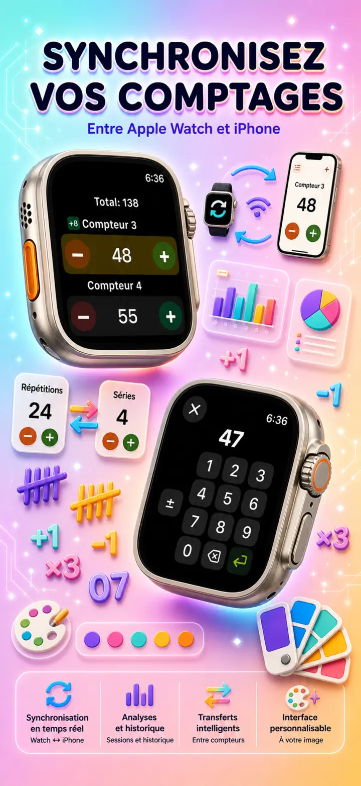
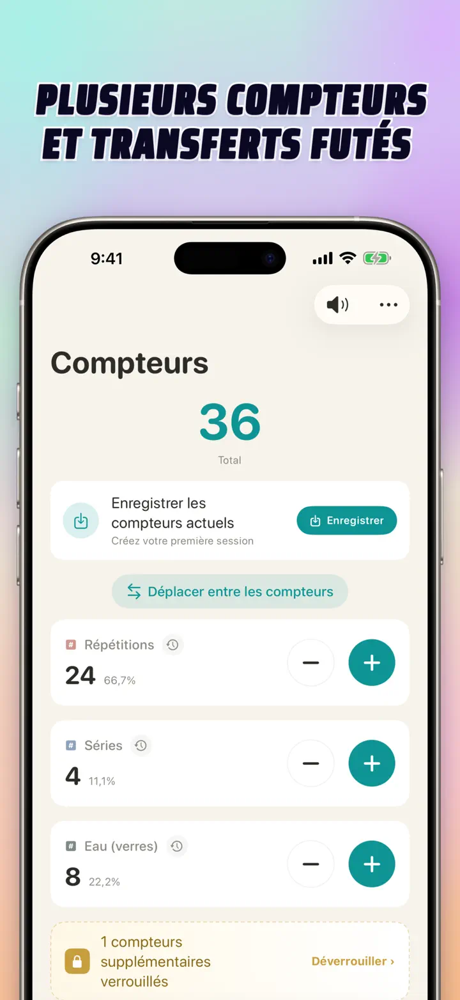
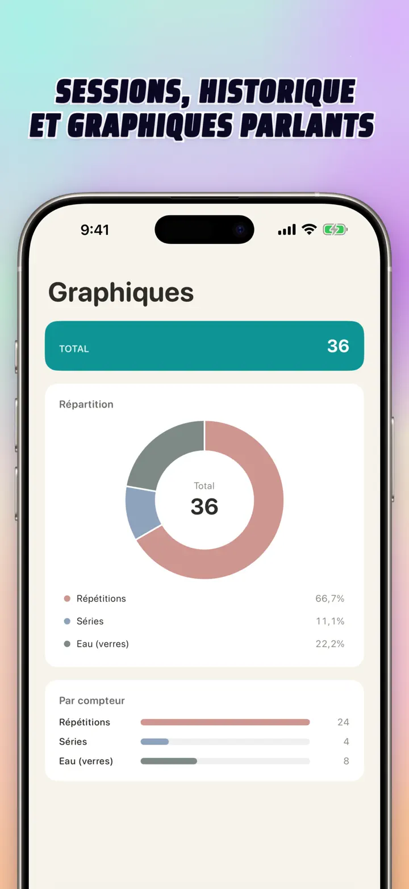
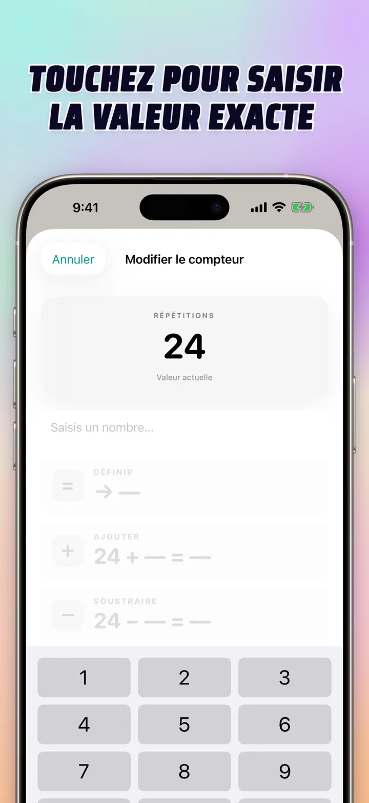
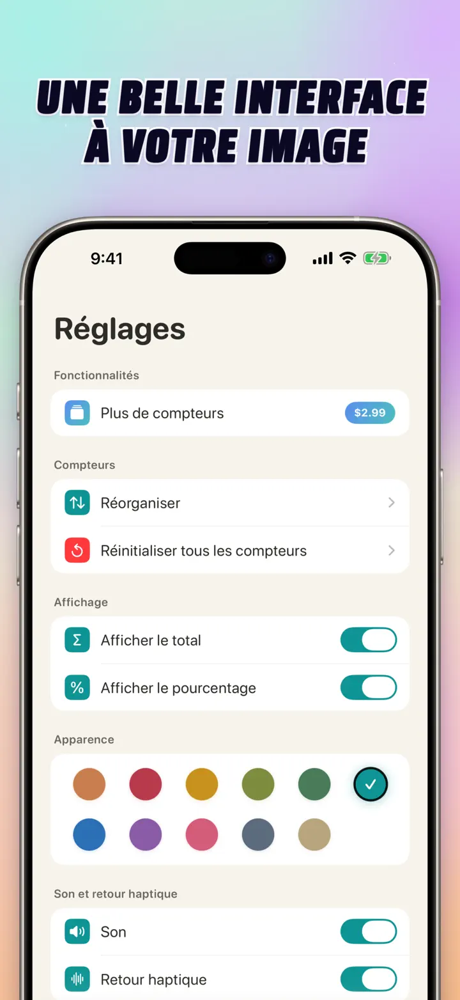
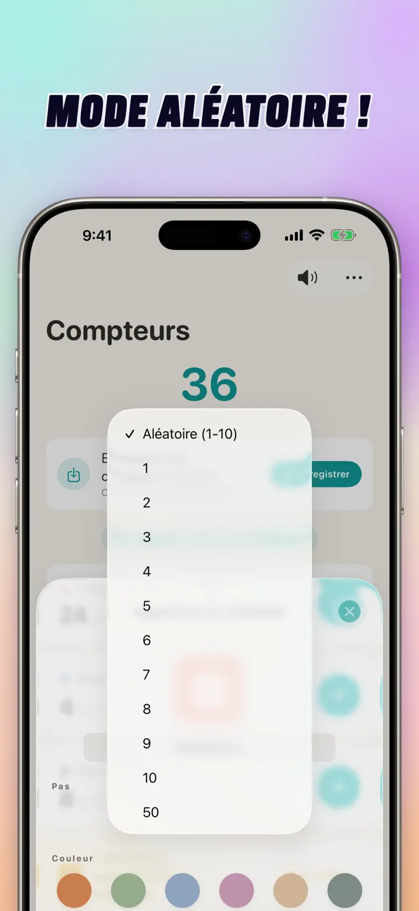

Compteur 123
Sync Watch, clics & score
Nouveau : widgets sur l'écran d'accueil — touchez +/- sur le widget sans ouvrir l'app. Compteur et clicker, sync Apple Watch, mode aléatoire, graphiques, historique.
Télécharger dans l’App StoreÀ propos de l’app
Compteur 123 est le compteur rapide et flexible pour iPhone, iPad et Apple Watch. Nommez vos compteurs, choisissez une couleur, et comptez tout — séries de muscu, mailles de tricot, chapelet, points en classe, inventaire, scores de jeu. Tout reste privé, en local sur votre appareil.
COMPTEURS PERSONNALISÉS
- Créez des compteurs séparés pour activités, jeux, routines ou listes
- Nom et couleur personnalisés pour chaque compteur
- Glisser-déposer pour réorganiser
- Appui maintenu pour compter en continu
- Fonctionne entièrement hors ligne — ni inscription ni cloud
SAISIE DIRECTE & OPÉRATIONS GROUPÉES
- Touchez un compteur pour définir directement une valeur de départ — pas besoin de remettre à zéro
- Ajout/Retrait groupé : changez un compteur de n'importe quelle valeur en un seul geste
- Transfert : déplacez une valeur d'un compteur à un autre sans double manipulation
- Pas personnalisé : un appui ajoute 1, 5, 10, 100, ou ce que vous voulez
- Aperçu en temps réel de chaque variation
MODE ALÉATOIRE
- Laissez un compteur tirer une nouvelle valeur de 1 à 10 à chaque tap
- Ajoutez ou retirez des valeurs aléatoires avec les boutons + et -
- Idéal pour exercices, jeux, récompenses, activités de classe et routines
- Chaque tap aléatoire est enregistré dans l’historique du compteur
TOTAUX & GRAPHIQUES
- Total cumulé sur tous vos compteurs
- Vue en pourcentage : part de chaque compteur dans le total
- Graphique à barres interactif — basculez entre valeur (#) et pourcentage (%)
- Tri par valeur pour voir le classement d'un coup d'œil
HISTORIQUE & PARTAGE
- Historique complet : chaque ajout, retrait et modification est enregistré
- Enregistrez et rechargez des ensembles de compteurs pour un usage répété
- Partagez vos configurations avec coéquipiers, élèves ou amis
- Consultez l’historique en journal daté, sessions groupées ou stats jour/semaine/mois
SYNC EN DIRECT AVEC APPLE WATCH
- Modifiez un compteur sur iPhone ou Apple Watch : les deux restent synchronisés
- Vraie application native watchOS — pas une simple app compagnon
- Noms, couleurs et valeurs synchronisés au poignet
- Touchez pour compter, maintenez pour répéter, directement depuis la montre
- Fonctionne en toute indépendance quand l'iPhone n'est pas à portée
CONÇU POUR iPhone, iPad & APPLE WATCH
- Interfaces adaptatives pour chaque taille d'écran
- iPad affiche plus de compteurs à la fois, Split View compatible
- Respect de la vie privée : stockage local uniquement, pas de cloud, pas de compte
PARFAIT POUR
- Séries et répétitions de muscu
- Mailles de tricot et points de crochet
- Chapelet et prière (dizaines, tasbih)
- Points en classe et appel des élèves
- Jeux de société, cartes, tarot, belote
- Inventaire et comptage de stock
- Handball, volley, tennis de table — score rapide
- Tours de piscine et de piste
- Observation ornithologique
- Comptage d'entrées et de participants
- Suivi d'habitudes et d'objectifs
- Inventaire tournant en entrepôt
Téléchargez Compteur 123 et rendez chaque comptage facile — clair, rapide, privé.
Politique de confidentialité : https://masawata.net/privacy-policy.html Conditions d'utilisation : https://www.apple.com/legal/internet-services/itunes/dev/stdeula/
Captures d’écran






Compteur 123
Nouveau : widgets sur l'écran d'accueil — touchez +/- sur le widget sans ouvrir l'app. Compteur et clicker, sync Apple Watch, mode aléatoire, graphiques, historique.
Télécharger dans l’App Store